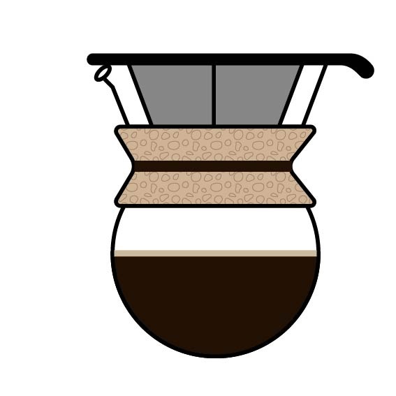
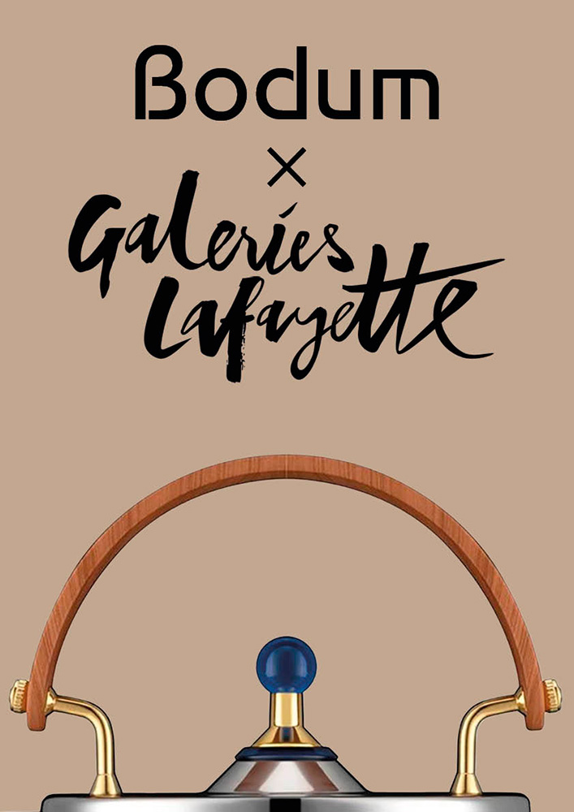

Bodum X Galerie Lafayette
Création de visuels entièrement réalisés sur Illustrator, reprenant les produits phares de la marque Bodum. Commande fictive des Galeries Lafayette, demandant la création de deux posters recto verso (le verso des posters comporte l’image de droite). Les deux rectos devaient être réalisés en trente minutes.



